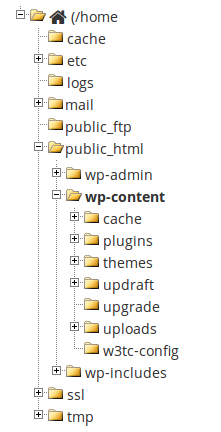

This post explains
It is written for Ubuntu Linux, but should work identically on OSX or Windows if you're using Docker-machine.
I assume you've installed docker already, just Google it otherwise. I then tried installing docker-compose with LinuxBrew but got errors trying to run it. So rather install docker-compose natively:
sudo -i
curl -L https://github.com/docker/compose/releases/download/1.9.0/docker-compose-\`uname -s\`-\`uname -m\` > /usr/local/bin/docker-compose
chmod +x /usr/local/bin/docker-compose
exitThis will allow us to edit the Wordpress themes & things from our host:
mkdir -p ~/projects/wp
vim ~/projects/wp/docker-compose.ymlversion: '2'
services:
db:
image: mysql
restart: always
environment:
MYSQL\_ROOT\_PASSWORD: lkj
volumes:
\- ./mysql:/var/lib/mysql
ports:
\- 60001:3306
wordpress:
image: wordpress:latest
restart: always
depends_on:
\- db
links:
\- db
ports:
\- 60000:80
environment:
WORDPRESS\_DB\_PASSWORD: lkj
WORDPRESS\_DB\_HOST: db
working_dir: /var/www/html
volumes:
\- ./data:/var/www/html\# :wq to save and quit vim
docker-compose up #and later just docker-compose start / stopYou can now browse to http://0.0.0.0:60000 and install Wordpress.
(And use Mysql Workbench to view the database on the port 60001).
Once you've installed Wordpress you can see all the files in ~/projects/wp/data. Download your backup .zip files (I assume you're using something like UpdraftPlus to Dropbox) and unzip them all somewhere. Now copy all the unzipped folders into the ~/projects/wp/data/wp-content folder so it looks like this:

Note you'll have to use the console to copy the files around because your user won't have permissions to the docker volume.
Try something like this, assuming you're in the wp-content folder:
sudo cp -r ~/unzipped/* . # copy files here
sudo chown -R www-data * # set the owner to docker
sudo chmod -R +rwx * # give everyone rights to everythingAdd the following code to the top of your database restore script (to avoid the error Error Code: 1067. Invalid default value for 'user_registered'):
SET SESSION sql_mode = 'NO_ENGINE_SUBSTITUTION';
-- SELECT @@GLOBAL.sql_mode;
drop database wordpress;
create database wordpress;
use wordpress;And this code to the bottom:
update wordpress.wp_options set option_value='http://0.0.0.0:60000' where option_name in ('siteurl', 'home')
Run the script:
mysql -h 0.0.0.0 -P 60001 -u root -p < restore.sql
You can now use your site at either 0.0.0.0:60000 or 127.0.0.1:60000 or localhost:60000 depending on your exact combination of operating system, virtual machine, docker-machine, and docker-compose.
Remember to close and reopen your entire browser and incognito windows each time you try to avoid caching errors.